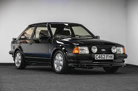

AS LENDAS DAS FORD



O Ford Escort foi um automóvel com produção em diversas gerações, tanto na Europa (desde 1968) quanto no Brasil (a partir de 1983), sendo o primeiro "carro mundial" da Ford no país.